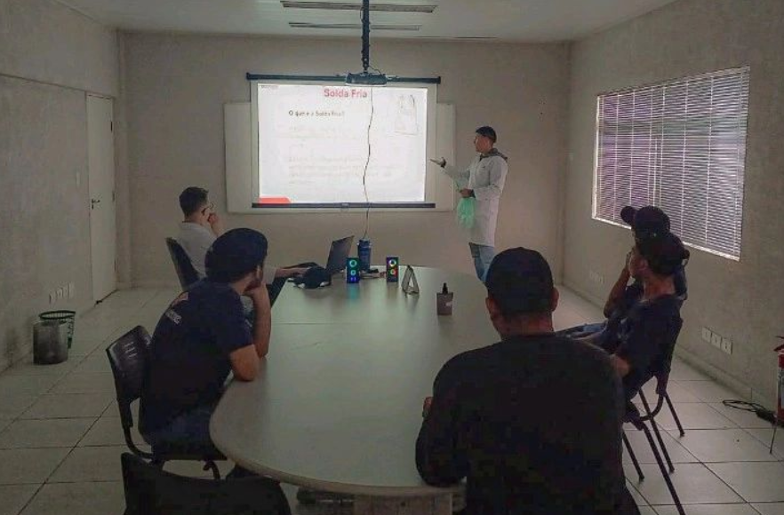

Atualmente, estou cursando Análise e Desenvolvimento de Sistemas, buscando consolidar meus conhecimentos e experiências para ingressar no mercado de TI. Além disso, possuo uma sólida experiência como Auxiliar de Gestão da Qualidade, onde desempenho diversas atividades relacionadas ao controle e garantia da qualidade..
Atualmente trabalho como Auxiliar de Gestão da Qualidade, onde minhas responsabilidades incluem:
- Realização de inspeções de qualidade para garantir a conformidade com os padrões estabelecidos.
- Desenvolvimento e implementação de controles de qualidade no Excel para monitorar e melhorar processos.
- Condução de auditorias internas para identificar áreas de melhoria e garantir a conformidade com os requisitos de qualidade.
- Emissão de alertas de qualidade para notificar sobre desvios ou não conformidades.
- Emissão de certificados para clientes, garantindo que os produtos atendam aos padrões e regulamentações exigidos.
- Treinamento de equipe sobre os processos e procedimentos de qualidade para garantir a adesão e compreensão adequadas.
Certificados:
